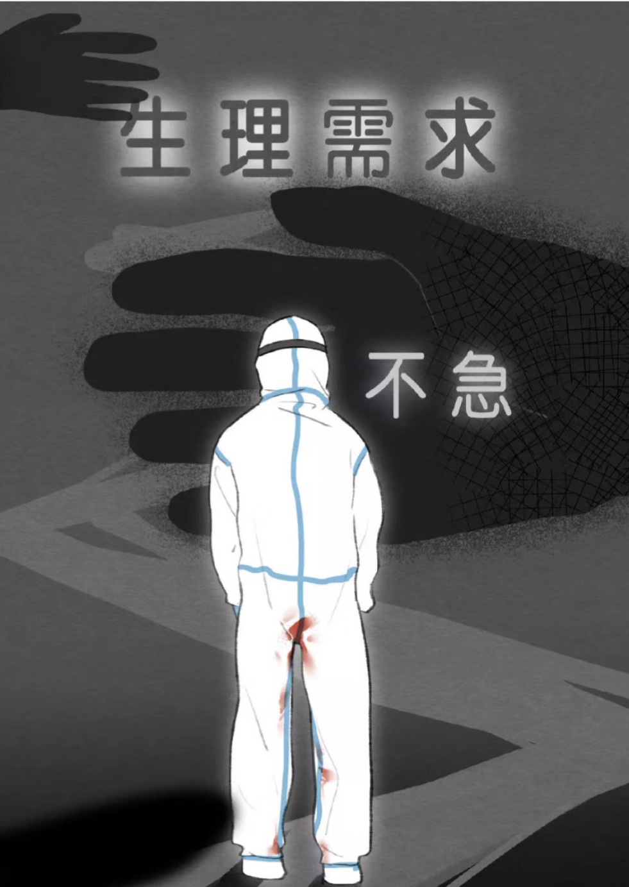
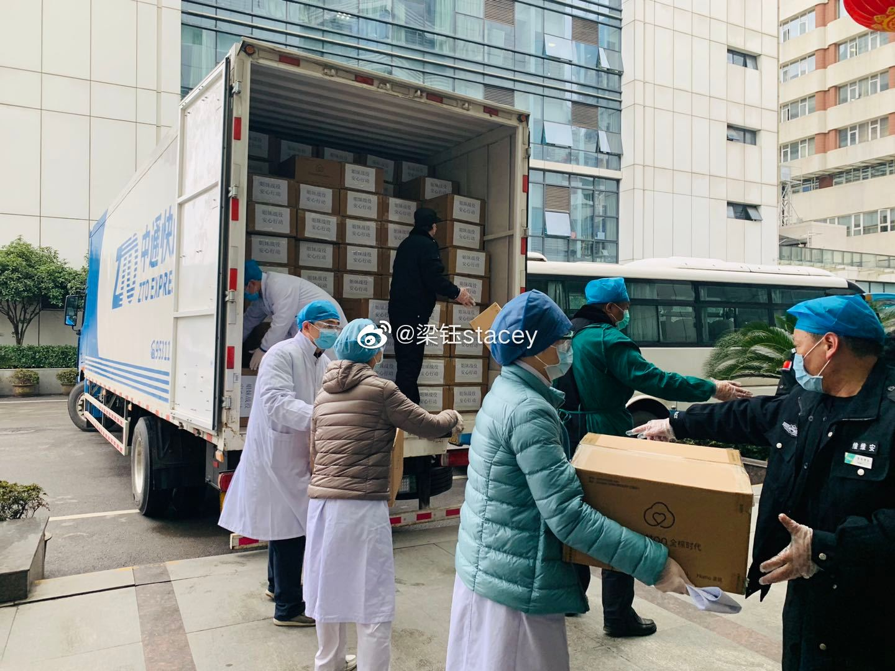
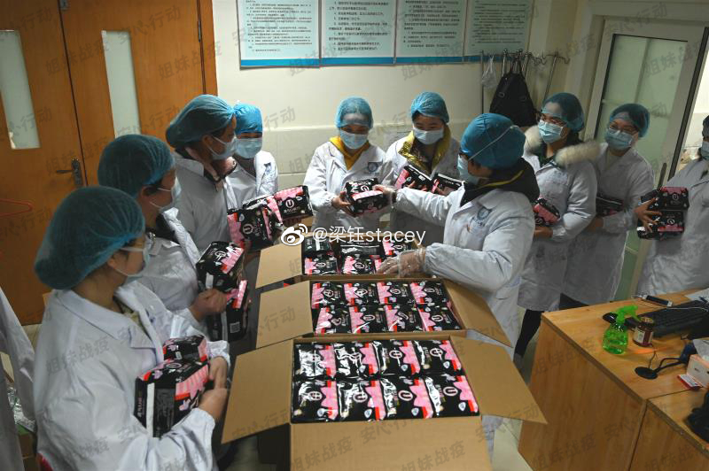
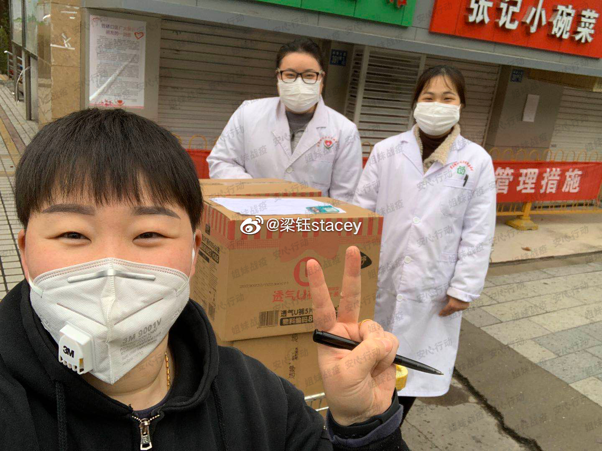
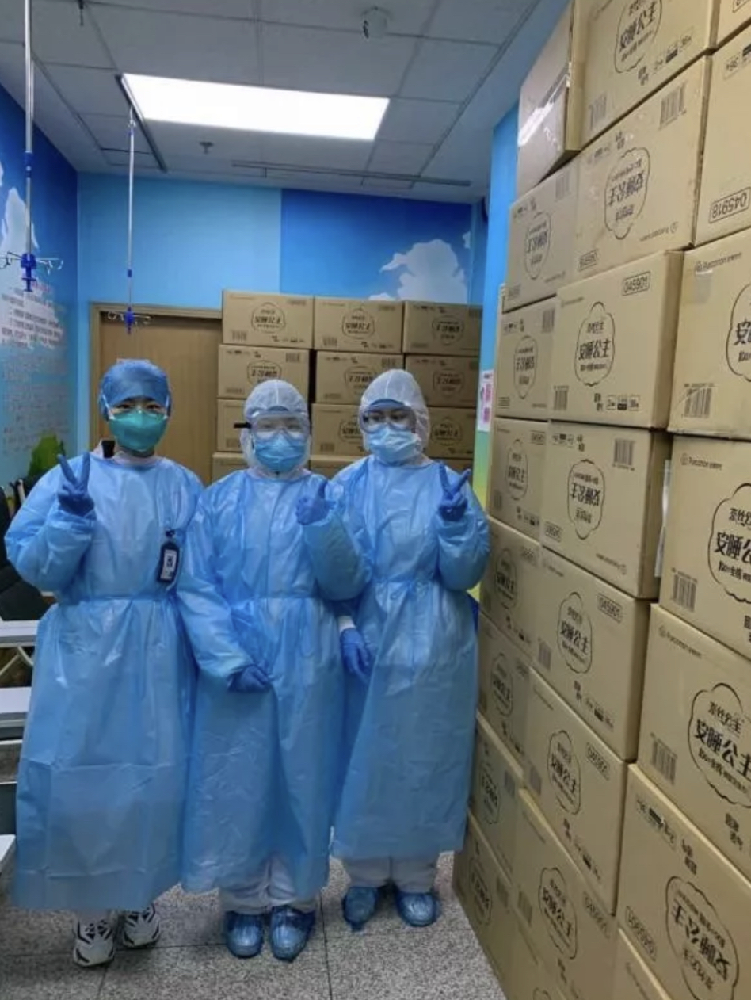
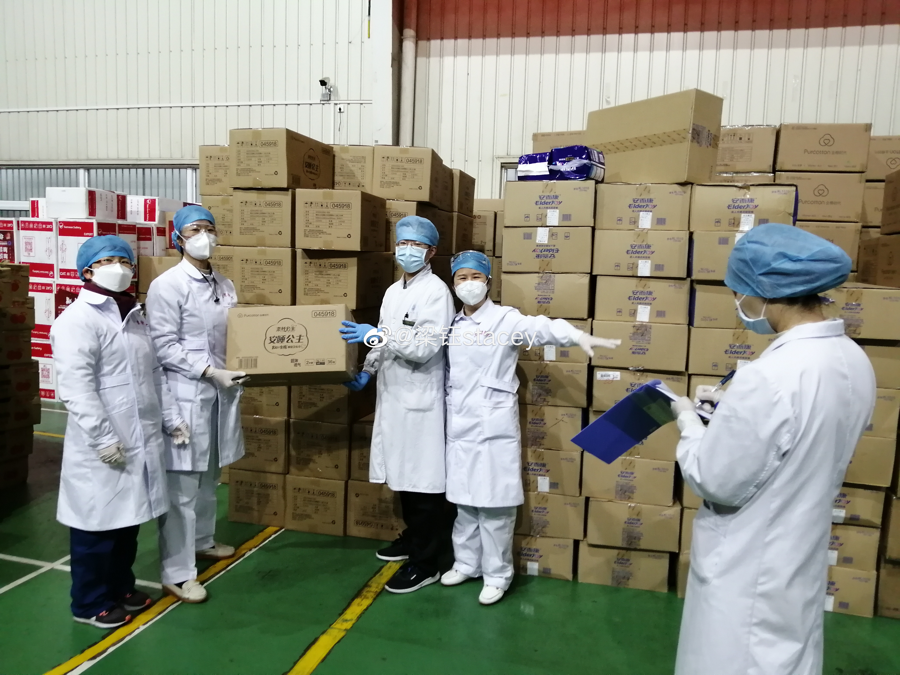

Female medical professionals who worked at the front line of pandemic
control were suffering from the negligence of government officials
who excluded sanitary pads (or hygiene products like overnight
underwear-like sanitary pads) from the list of medical necessities.
Having long working hours in PPEs, female medical professionals were
unable to go to the bathroom for a entire day, for once they leave the
contaminated area, they will need a new set of PPE to reenter.
Without sanitary pads orabsorbent sanitary pants when confined in hospitals,
they used plastic wraps, adult diapers as substitutes, or they often
stayed in their PPE for hours without eating, drinking, or going to the bathroom, or they
would run out of underwear and would wear PPE directly, sometimes covered in blood.
These problems were directly caused by sexist policies which didn’t consider
feminine hygiene products as official “emergency relief supplies.”

To deal with the logistic challenges caused by this sexist policy,
Liang and her team worked tirelessly to coordinate their work.
Using Weibo, she called for both manufacturers who agreed to donate
and hospitals who agreed to accept donations to report on how supplies
were transported and distributed to people in need. While such public
attention could hold them accountable, it was more important that the
policy change so that these products could be labeled as “emergency
relief supplies” and enjoy the benefits of “green channels” or officially
sanctioned logistic networks by the National Health Commission and
the State Post Bureau. She also shared ways for the
public to use Weibo to amplify this cause and to write directly to
government institutions in charge of epidemic relief to call for this
policy change.




Female medical workers received sanitary product donations in hospitals